01Cisco ThousandEyes
Enterprise software · AI · Endpoint and Mobile AssuranceExtending digital assurance across devices, networks and AI workflows.
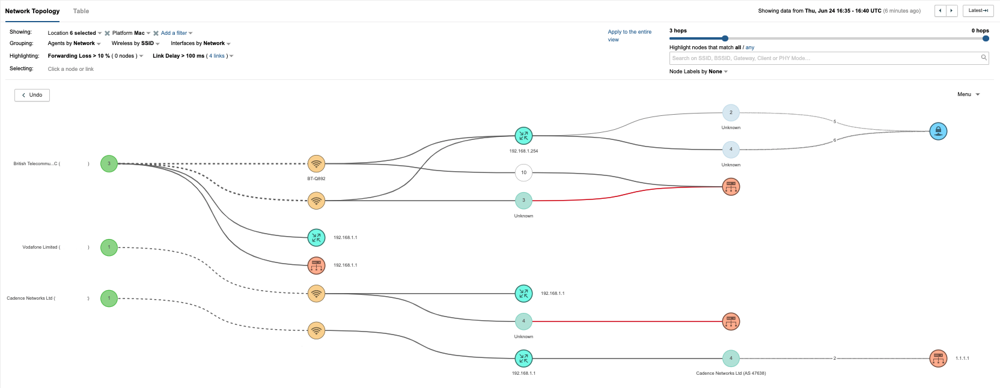
Endpoint ExperienceProduct Story
Customer Problem
IT teams need to understand whether a poor digital experience starts with an application, the network or an employee’s device. Distributed work and diverse device environments make that diagnosis harder.
My Contributions
- Led end-to-end product strategy, development and launches across enterprise endpoints, mobile devices and collaboration platforms.
- Expanded platform support across ChromeOS, PhoneOS and AOSP, coordinating engineering teams and technology partners.
- Advanced AI Assistant and MCP Server integration to connect endpoint telemetry with conversational troubleshooting and automated workflows.
Customer Experience
Connected device, network and application signals so support teams can investigate issues with the context they need. Extended that experience to mobile workforces and AI-assisted investigation.
Endpoint Experience · Product views
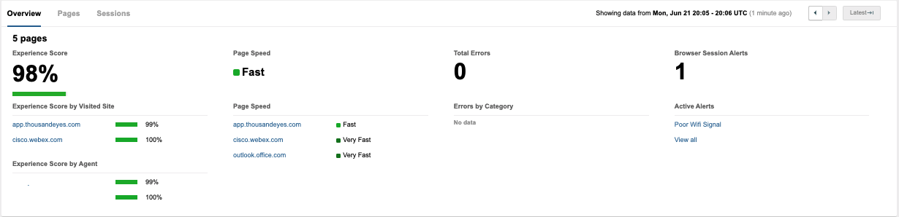
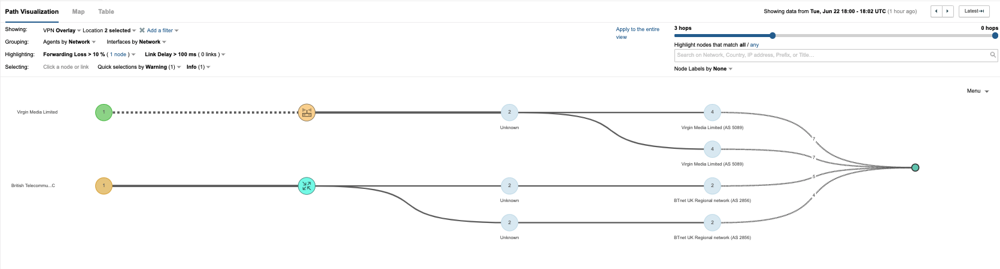
Mobile Endpoint Agent · In-app experience
Explore the app, monitoring and mobile business use cases. Scroll to see every screen.
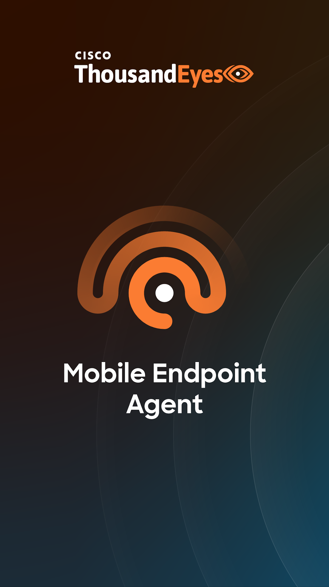
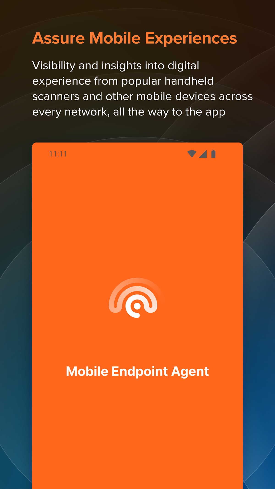
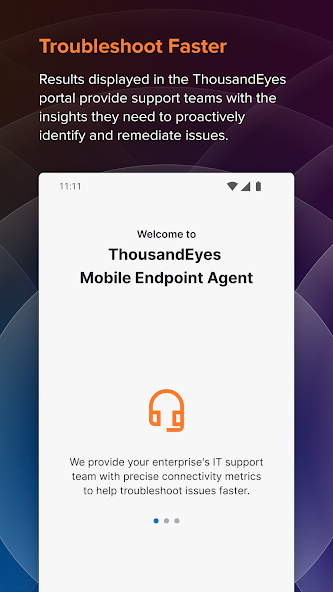
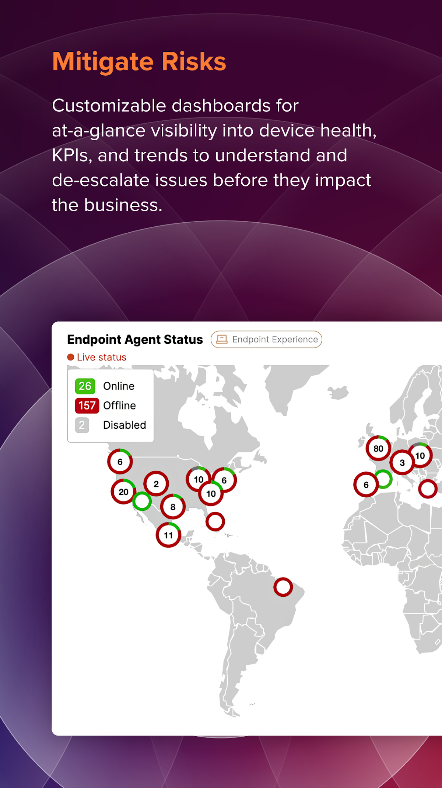
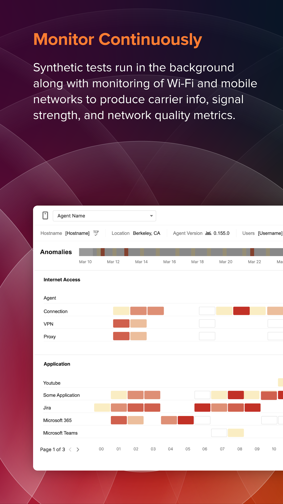
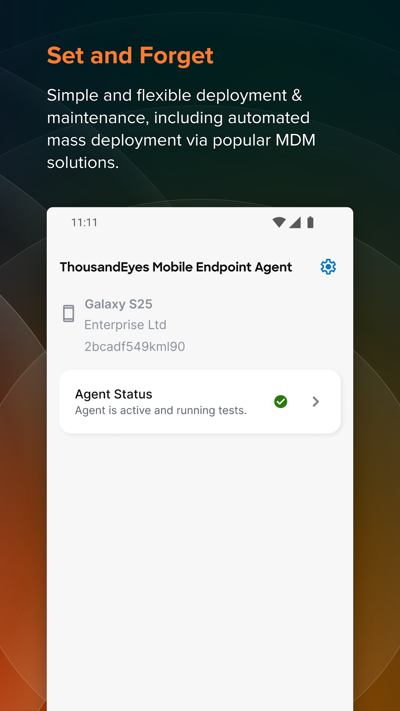
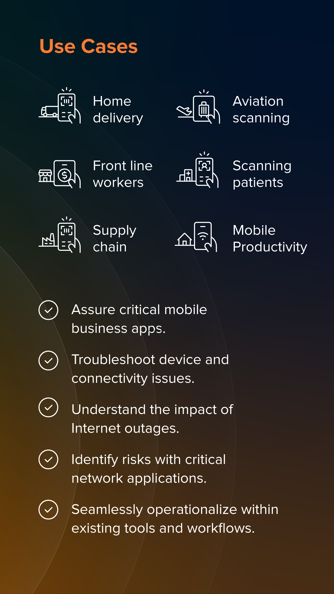
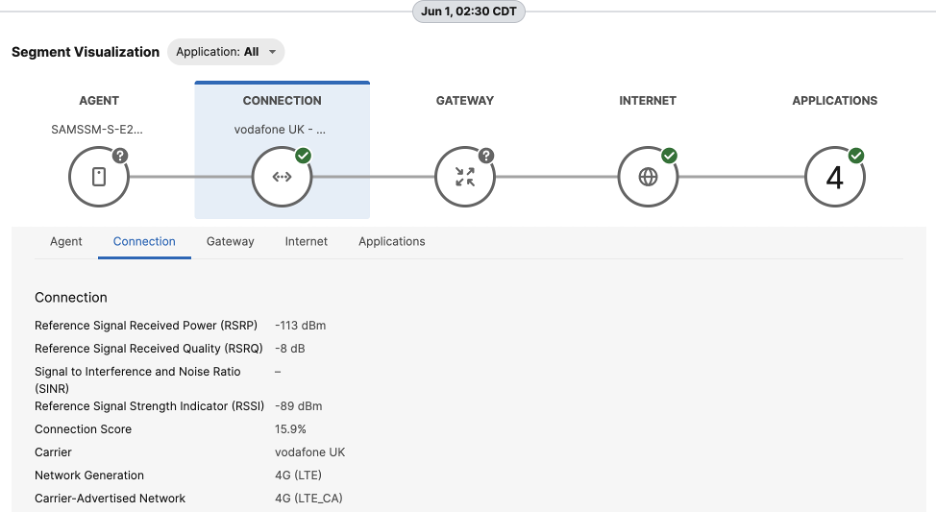
Results
Delivered launches across mobile, ChromeOS and collaboration endpoints.
Connected assurance data with conversational investigation and automation.
Selected Launches
- Mobile Endpoint AgentWatch the launch announcement ↗
Mobile Experience Assurance
Shaped the launch as Lead Product Manager, with the Mobile Endpoint Agent bringing device, network and application visibility to mobile workforces.
Mobile Endpoint Agent Launch Announcement ↗ ChromeOS general availability
Extended endpoint visibility to Chromebooks, including network tests, path visualisation, alerts and deployment through Google Admin Console.
ChromeOS launch announcement ↗Mobile Endpoint Agent for ChromeOSWatch the product video ↗Cisco PhoneOS support
Expanded assurance across Cisco Phones 9861 and 9871 and Video Phone 8875, connecting device and network insight to call-quality troubleshooting.
PhoneOS integration details ↗Cisco AI Assistant
Integrated AI-assisted troubleshooting into the endpoint product experience, connecting device, application and network telemetry with conversational insights.
Cisco AI Assistant · Product demoPlay the demo aboveThousandEyes MCP Server
Connected ThousandEyes telemetry with AI tools and automated workflows through MCP Server integration. Explore the demo with Cursor and Claude Desktop.
MCP Server · Cursor and Claude DesktopPlay the demo aboveAOSP support · Open Beta
Extending Mobile Endpoint Agent support to Android Open Source Project devices without Google Mobile Services.
Explore AOSP support ↗MOBILE ENDPOINT AGENTAOSPAndroid Open Source ProjectOPEN BETAAssurance across more Android devicesExplore AOSP support ↗